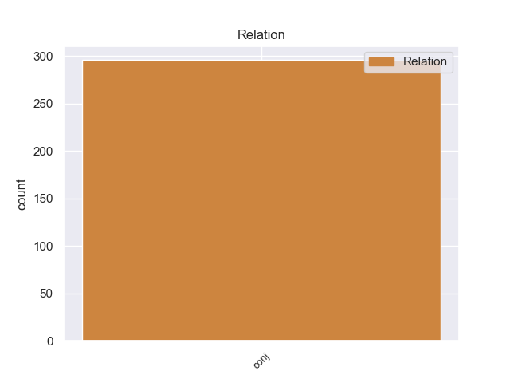
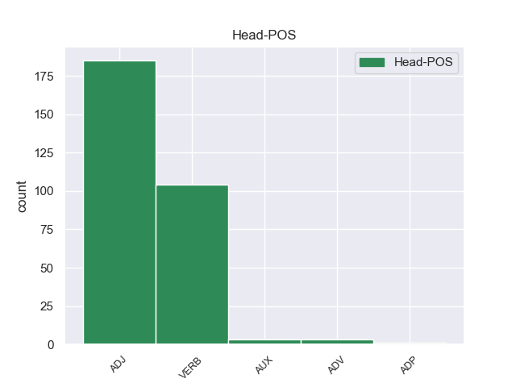
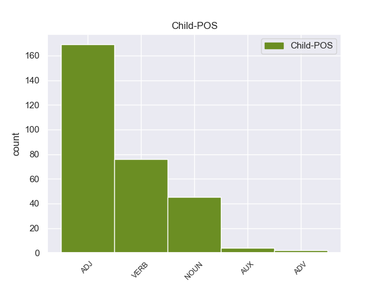

Distribution of features within this leaf



Agreement Rules sorted by frequency.
- When the dependent token is the conjunct(conj) of the head token, and the head token is ADJ and the dependent token is ADJ.
1 दलाई _ _ _ _ 0 _ _ _
2 लामा _ _ _ _ 0 _ _ _
3 ने _ _ _ _ 0 _ _ _
4 कहा _ _ _ _ 0 _ _ _
5 कि _ _ _ _ 0 _ _ _
6 मैं _ _ _ _ 0 _ _ _
7 तिब्बती _ _ _ _ 0 _ _ _
8 समस्या _ _ _ _ 0 _ _ _
9 का _ _ _ _ 0 _ _ _
10 सार्थक सार्थक ADJ -- Case=Nom 0 _ _ _
11 और _ _ _ _ 0 _ _ _
12 मान्य मान्य ADJ -- Case=Nom 10 conj _ _
13 हल _ _ _ _ 0 _ _ _
14 ढूंढ़ने _ _ _ _ 0 _ _ _
15 की _ _ _ _ 0 _ _ _
16 कोशिश _ _ _ _ 0 _ _ _
17 में _ _ _ _ 0 _ _ _
18 हूं _ _ _ _ 0 _ _ _
19 । _ _ _ _ 0 _ _ _
1 ऐसा _ _ _ _ 0 _ _ _
2 होने _ _ _ _ 0 _ _ _
3 की _ _ _ _ 0 _ _ _
4 स्थिति _ _ _ _ 0 _ _ _
5 में _ _ _ _ 0 _ _ _
6 शिक्षकों _ _ _ _ 0 _ _ _
7 के _ _ _ _ 0 _ _ _
8 लिए _ _ _ _ 0 _ _ _
9 पाठ्य _ _ _ _ 0 _ _ _
10 - _ _ _ _ 0 _ _ _
11 पुस्तकों _ _ _ _ 0 _ _ _
12 के _ _ _ _ 0 _ _ _
13 कुछ _ _ _ _ 0 _ _ _
14 अंश _ _ _ _ 0 _ _ _
15 न _ _ _ _ 0 _ _ _
16 पढ़ाने पढ़ा VERB -- Case=Acc|VerbForm=Inf 0 _ _ _
17 और _ _ _ _ 0 _ _ _
18 कुछ _ _ _ _ 0 _ _ _
19 अलग _ _ _ _ 0 _ _ _
20 से _ _ _ _ 0 _ _ _
21 पढ़ाने पढ़ा VERB -- Case=Acc|Number=Plur|VerbForm=Inf 16 conj _ _
22 जैसे _ _ _ _ 0 _ _ _
23 दिशा _ _ _ _ 0 _ _ _
24 - _ _ _ _ 0 _ _ _
25 निर्देश _ _ _ _ 0 _ _ _
26 भी _ _ _ _ 0 _ _ _
27 जारी _ _ _ _ 0 _ _ _
28 किए _ _ _ _ 0 _ _ _
29 जा _ _ _ _ 0 _ _ _
30 सकते _ _ _ _ 0 _ _ _
31 हैं _ _ _ _ 0 _ _ _
32 । _ _ _ _ 0 _ _ _
1 राष्ट्रपति _ _ _ _ 0 _ _ _
2 ने _ _ _ _ 0 _ _ _
3 कहा _ _ _ _ 0 _ _ _
4 कि _ _ _ _ 0 _ _ _
5 परंपरागत _ _ _ _ 0 _ _ _
6 जल _ _ _ _ 0 _ _ _
7 स्रोतों _ _ _ _ 0 _ _ _
8 को _ _ _ _ 0 _ _ _
9 दोबारा _ _ _ _ 0 _ _ _
10 जीवित _ _ _ _ 0 _ _ _
11 करने कर VERB -- Case=Acc|VerbForm=Inf 0 _ _ _
12 और _ _ _ _ 0 _ _ _
13 जल _ _ _ _ 0 _ _ _
14 संरक्षण संरक्षण NOUN -- Case=Acc|Gender=Masc|Number=Sing|Person=3 11 conj _ _
15 से _ _ _ _ 0 _ _ _
16 तीन _ _ _ _ 0 _ _ _
17 - _ _ _ _ 0 _ _ _
18 चार _ _ _ _ 0 _ _ _
19 साल _ _ _ _ 0 _ _ _
20 के _ _ _ _ 0 _ _ _
21 लिए _ _ _ _ 0 _ _ _
22 60 _ _ _ _ 0 _ _ _
23 लाख _ _ _ _ 0 _ _ _
24 रोजगार _ _ _ _ 0 _ _ _
25 के _ _ _ _ 0 _ _ _
26 अवसरों _ _ _ _ 0 _ _ _
27 का _ _ _ _ 0 _ _ _
28 सृजन _ _ _ _ 0 _ _ _
29 हो _ _ _ _ 0 _ _ _
30 सकता _ _ _ _ 0 _ _ _
31 है _ _ _ _ 0 _ _ _
32 और _ _ _ _ 0 _ _ _
33 यह _ _ _ _ 0 _ _ _
34 लक्ष्य _ _ _ _ 0 _ _ _
35 पूरा _ _ _ _ 0 _ _ _
36 हो _ _ _ _ 0 _ _ _
37 जाने _ _ _ _ 0 _ _ _
38 के _ _ _ _ 0 _ _ _
39 बाद _ _ _ _ 0 _ _ _
40 इसके _ _ _ _ 0 _ _ _
41 रख _ _ _ _ 0 _ _ _
42 - _ _ _ _ 0 _ _ _
43 रखाव _ _ _ _ 0 _ _ _
44 में _ _ _ _ 0 _ _ _
45 भी _ _ _ _ 0 _ _ _
46 लोगों _ _ _ _ 0 _ _ _
47 को _ _ _ _ 0 _ _ _
48 रोजगार _ _ _ _ 0 _ _ _
49 मिलेगा _ _ _ _ 0 _ _ _
50 । _ _ _ _ 0 _ _ _
1 संयुक्त _ _ _ _ 0 _ _ _
2 राष्ट्र _ _ _ _ 0 _ _ _
3 सेमिनार _ _ _ _ 0 _ _ _
4 में _ _ _ _ 0 _ _ _
5 हिस्सा _ _ _ _ 0 _ _ _
6 लेकर _ _ _ _ 0 _ _ _
7 वे _ _ _ _ 0 _ _ _
8 बिहार _ _ _ _ 0 _ _ _
9 की _ _ _ _ 0 _ _ _
10 पहली पहला ADJ -- Case=Nom|Gender=Fem|Number=Sing|NumType=Ord 0 _ _ _
11 और _ _ _ _ 0 _ _ _
12 देश _ _ _ _ 0 _ _ _
13 की _ _ _ _ 0 _ _ _
14 पांचवीं _ _ _ _ 0 _ _ _
15 ग्रामीण _ _ _ _ 0 _ _ _
16 महिला महिला NOUN -- Case=Nom|Gender=Fem|Number=Sing|Person=3 10 conj _ _
17 बन _ _ _ _ 0 _ _ _
18 जाती _ _ _ _ 0 _ _ _
19 । _ _ _ _ 0 _ _ _
1 यह _ _ _ _ 0 _ _ _
2 घटना _ _ _ _ 0 _ _ _
3 टोरंटो _ _ _ _ 0 _ _ _
4 हवाई _ _ _ _ 0 _ _ _
5 अड्डे _ _ _ _ 0 _ _ _
6 पर _ _ _ _ 0 _ _ _
7 एयरबस _ _ _ _ 0 _ _ _
8 ए _ _ _ _ 0 _ _ _
9 ३४० _ _ _ _ 0 _ _ _
10 के _ _ _ _ 0 _ _ _
11 फिसलने फिसल VERB -- Case=Acc|VerbForm=Inf 0 _ _ _
12 के _ _ _ _ 0 _ _ _
13 और _ _ _ _ 0 _ _ _
14 जल _ _ _ _ 0 _ _ _
15 जाने जा AUX -- Case=Acc|VerbForm=Inf 11 conj _ _
16 के _ _ _ _ 0 _ _ _
17 महज _ _ _ _ 0 _ _ _
18 दो _ _ _ _ 0 _ _ _
19 दिन _ _ _ _ 0 _ _ _
20 बाद _ _ _ _ 0 _ _ _
21 ही _ _ _ _ 0 _ _ _
22 हुई _ _ _ _ 0 _ _ _
23 है _ _ _ _ 0 _ _ _
24 । _ _ _ _ 0 _ _ _
1 उन्होंने _ _ _ _ 0 _ _ _
2 स्टेडियम _ _ _ _ 0 _ _ _
3 के _ _ _ _ 0 _ _ _
4 अंदर अंदर ADV -- AdpType=Post|Case=Nom|Gender=Masc|Number=Sing|Person=3 0 _ _ _
5 और _ _ _ _ 0 _ _ _
6 बाहर बाहर ADV -- AdpType=Post|Case=Nom|Gender=Masc|Number=Sing|Person=3 4 conj _ _
7 तैनात _ _ _ _ 0 _ _ _
8 पुलिस _ _ _ _ 0 _ _ _
9 के _ _ _ _ 0 _ _ _
10 जवानों _ _ _ _ 0 _ _ _
11 पर _ _ _ _ 0 _ _ _
12 भी _ _ _ _ 0 _ _ _
13 पथराव _ _ _ _ 0 _ _ _
14 किया _ _ _ _ 0 _ _ _
15 । _ _ _ _ 0 _ _ _
1 इस _ _ _ _ 0 _ _ _
2 बारे _ _ _ _ 0 _ _ _
3 में _ _ _ _ 0 _ _ _
4 राज्यसभा _ _ _ _ 0 _ _ _
5 में _ _ _ _ 0 _ _ _
6 एक _ _ _ _ 0 _ _ _
7 प्रश्न _ _ _ _ 0 _ _ _
8 के _ _ _ _ 0 _ _ _
9 जवाब _ _ _ _ 0 _ _ _
10 में _ _ _ _ 0 _ _ _
11 विदेश _ _ _ _ 0 _ _ _
12 मंत्री _ _ _ _ 0 _ _ _
13 नटवर _ _ _ _ 0 _ _ _
14 सिंह _ _ _ _ 0 _ _ _
15 ने _ _ _ _ 0 _ _ _
16 कहा _ _ _ _ 0 _ _ _
17 कि _ _ _ _ 0 _ _ _
18 नेपाल _ _ _ _ 0 _ _ _
19 नरेश _ _ _ _ 0 _ _ _
20 ज्ञानेंद्र _ _ _ _ 0 _ _ _
21 द्वारा _ _ _ _ 0 _ _ _
22 प्रधानमंत्री _ _ _ _ 0 _ _ _
23 मनमोहन _ _ _ _ 0 _ _ _
24 सिंह _ _ _ _ 0 _ _ _
25 व _ _ _ _ 0 _ _ _
26 उन्हें _ _ _ _ 0 _ _ _
27 देश _ _ _ _ 0 _ _ _
28 में _ _ _ _ 0 _ _ _
29 आपातकाल _ _ _ _ 0 _ _ _
30 हटाए _ _ _ _ 0 _ _ _
31 जाने जा AUX -- Case=Acc|VerbForm=Inf 0 _ _ _
32 , _ _ _ _ 0 _ _ _
33 राजनीतिक _ _ _ _ 0 _ _ _
34 कैदियों _ _ _ _ 0 _ _ _
35 के _ _ _ _ 0 _ _ _
36 छोड़े _ _ _ _ 0 _ _ _
37 जाने जा AUX -- Case=Acc|VerbForm=Inf 31 conj _ _
38 व _ _ _ _ 0 _ _ _
39 लोकतांत्रिक _ _ _ _ 0 _ _ _
40 प्रक्रिया _ _ _ _ 0 _ _ _
41 जल्द _ _ _ _ 0 _ _ _
42 शुरू _ _ _ _ 0 _ _ _
43 किए _ _ _ _ 0 _ _ _
44 जाने _ _ _ _ 0 _ _ _
45 के _ _ _ _ 0 _ _ _
46 आश्वासन _ _ _ _ 0 _ _ _
47 देने _ _ _ _ 0 _ _ _
48 के _ _ _ _ 0 _ _ _
49 बाद _ _ _ _ 0 _ _ _
50 यह _ _ _ _ 0 _ _ _
51 कार्रवाई _ _ _ _ 0 _ _ _
52 करना _ _ _ _ 0 _ _ _
53 खेद _ _ _ _ 0 _ _ _
54 जनक _ _ _ _ 0 _ _ _
55 है _ _ _ _ 0 _ _ _
56 . _ _ _ _ 0 _ _ _
1 खुद _ _ _ _ 0 _ _ _
2 को _ _ _ _ 0 _ _ _
3 सारी _ _ _ _ 0 _ _ _
4 कवायद _ _ _ _ 0 _ _ _
5 से _ _ _ _ 0 _ _ _
6 दूर _ _ _ _ 0 _ _ _
7 रखे _ _ _ _ 0 _ _ _
8 जाने जा AUX -- Case=Acc|VerbForm=Inf 0 _ _ _
9 , _ _ _ _ 0 _ _ _
10 अपने _ _ _ _ 0 _ _ _
11 समर्थकों _ _ _ _ 0 _ _ _
12 को _ _ _ _ 0 _ _ _
13 जानबूझकर _ _ _ _ 0 _ _ _
14 मंत्रिमंडल _ _ _ _ 0 _ _ _
15 से _ _ _ _ 0 _ _ _
16 बाहर _ _ _ _ 0 _ _ _
17 करने कर VERB -- Case=Acc|VerbForm=Inf 8 conj _ _
18 और _ _ _ _ 0 _ _ _
19 अपने _ _ _ _ 0 _ _ _
20 गुट _ _ _ _ 0 _ _ _
21 को _ _ _ _ 0 _ _ _
22 प्रतिनिधित्व _ _ _ _ 0 _ _ _
23 न _ _ _ _ 0 _ _ _
24 दिए _ _ _ _ 0 _ _ _
25 जाने _ _ _ _ 0 _ _ _
26 से _ _ _ _ 0 _ _ _
27 नाराज _ _ _ _ 0 _ _ _
28 उप _ _ _ _ 0 _ _ _
29 - _ _ _ _ 0 _ _ _
30 मुख्यमंत्री _ _ _ _ 0 _ _ _
31 राजेंद्र _ _ _ _ 0 _ _ _
32 कौर _ _ _ _ 0 _ _ _
33 भट्ठल _ _ _ _ 0 _ _ _
34 लगातार _ _ _ _ 0 _ _ _
35 दिल्ली _ _ _ _ 0 _ _ _
36 में _ _ _ _ 0 _ _ _
37 डेरा _ _ _ _ 0 _ _ _
38 डालकर _ _ _ _ 0 _ _ _
39 हाईकमान _ _ _ _ 0 _ _ _
40 से _ _ _ _ 0 _ _ _
41 नियमित _ _ _ _ 0 _ _ _
42 संपर्क _ _ _ _ 0 _ _ _
43 में _ _ _ _ 0 _ _ _
44 हैं _ _ _ _ 0 _ _ _
45 । _ _ _ _ 0 _ _ _
1 जिसमें _ _ _ _ 0 _ _ _
2 जद _ _ _ _ 0 _ _ _
3 - _ _ _ _ 0 _ _ _
4 यू _ _ _ _ 0 _ _ _
5 की _ _ _ _ 0 _ _ _
6 ८७ _ _ _ _ 0 _ _ _
7 सीट _ _ _ _ 0 _ _ _
8 और _ _ _ _ 0 _ _ _
9 भाजपा _ _ _ _ 0 _ _ _
10 की का ADP -- AdpType=Post|Case=Nom|Gender=Fem|Number=Plur 0 _ _ _
11 ५५ _ _ _ _ 0 _ _ _
12 सीट सीट NOUN -- Case=Nom|Gender=Fem|Number=Plur|Person=3 10 conj _ _
13 शामिल _ _ _ _ 0 _ _ _
14 हैं _ _ _ _ 0 _ _ _
15 । _ _ _ _ 0 _ _ _
1 जद _ _ _ _ 0 _ _ _
2 ( _ _ _ _ 0 _ _ _
3 यू _ _ _ _ 0 _ _ _
4 ) _ _ _ _ 0 _ _ _
5 नेता _ _ _ _ 0 _ _ _
6 जॉर्ज _ _ _ _ 0 _ _ _
7 फर्नांडिस _ _ _ _ 0 _ _ _
8 के _ _ _ _ 0 _ _ _
9 खिलाफ _ _ _ _ 0 _ _ _
10 मामला _ _ _ _ 0 _ _ _
11 दर्ज _ _ _ _ 0 _ _ _
12 किए _ _ _ _ 0 _ _ _
13 जाने जा AUX -- Case=Acc|VerbForm=Inf 0 _ _ _
14 और _ _ _ _ 0 _ _ _
15 चुनाव _ _ _ _ 0 _ _ _
16 आयोग _ _ _ _ 0 _ _ _
17 के _ _ _ _ 0 _ _ _
18 अधिकारी _ _ _ _ 0 _ _ _
19 के. _ _ _ _ 0 _ _ _
20 जे. _ _ _ _ 0 _ _ _
21 राव _ _ _ _ 0 _ _ _
22 की _ _ _ _ 0 _ _ _
23 रिपोर्ट रिपोर्ट NOUN -- Case=Acc|Gender=Fem|Number=Sing|Person=3 13 conj _ _
24 पर _ _ _ _ 0 _ _ _
25 केंद्रीय _ _ _ _ 0 _ _ _
26 चुनाव _ _ _ _ 0 _ _ _
27 आयोग _ _ _ _ 0 _ _ _
28 रविवार _ _ _ _ 0 _ _ _
29 को _ _ _ _ 0 _ _ _
30 अपनी _ _ _ _ 0 _ _ _
31 पूर्ण _ _ _ _ 0 _ _ _
32 बैठक _ _ _ _ 0 _ _ _
33 में _ _ _ _ 0 _ _ _
34 विचार _ _ _ _ 0 _ _ _
35 करेगा _ _ _ _ 0 _ _ _
36 । _ _ _ _ 0 _ _ _
1 सम्मेलन _ _ _ _ 0 _ _ _
2 में _ _ _ _ 0 _ _ _
3 आए _ _ _ _ 0 _ _ _
4 विभिन्न _ _ _ _ 0 _ _ _
5 राज्यों _ _ _ _ 0 _ _ _
6 के _ _ _ _ 0 _ _ _
7 प्रतिनिधियों _ _ _ _ 0 _ _ _
8 ने _ _ _ _ 0 _ _ _
9 कहा _ _ _ _ 0 _ _ _
10 कि _ _ _ _ 0 _ _ _
11 दूर _ _ _ _ 0 _ _ _
12 - _ _ _ _ 0 _ _ _
13 दराज दराज ADV -- AdpType=Post|Case=Acc|Gender=Masc|Number=Sing|Person=3 0 _ _ _
14 या _ _ _ _ 0 _ _ _
15 हाशिए हाशिया NOUN -- Case=Acc|Gender=Masc|Number=Sing|Person=3 13 conj _ _
16 के _ _ _ _ 0 _ _ _
17 गाँवों _ _ _ _ 0 _ _ _
18 में _ _ _ _ 0 _ _ _
19 रहने _ _ _ _ 0 _ _ _
20 वाले _ _ _ _ 0 _ _ _
21 बुजुर्गो _ _ _ _ 0 _ _ _
22 के _ _ _ _ 0 _ _ _
23 लिए _ _ _ _ 0 _ _ _
24 जिला _ _ _ _ 0 _ _ _
25 केंद्र _ _ _ _ 0 _ _ _
26 तक _ _ _ _ 0 _ _ _
27 आना _ _ _ _ 0 _ _ _
28 व्यवहारिक _ _ _ _ 0 _ _ _
29 रूप _ _ _ _ 0 _ _ _
30 से _ _ _ _ 0 _ _ _
31 संभव _ _ _ _ 0 _ _ _
32 नहीं _ _ _ _ 0 _ _ _
33 होगा _ _ _ _ 0 _ _ _
34 । _ _ _ _ 0 _ _ _
Disagree Examples:
1 वैसे _ _ _ _ 0 _ _ _
2 अमेरिका _ _ _ _ 0 _ _ _
3 ने _ _ _ _ 0 _ _ _
4 चीन _ _ _ _ 0 _ _ _
5 और _ _ _ _ 0 _ _ _
6 पाकिस्तान _ _ _ _ 0 _ _ _
7 के _ _ _ _ 0 _ _ _
8 बीच _ _ _ _ 0 _ _ _
9 हुए _ _ _ _ 0 _ _ _
10 एटमी एटमी ADJ -- Case=Acc 0 _ _ _
11 व _ _ _ _ 0 _ _ _
12 रक्षा रक्षा NOUN -- Case=Nom|Gender=Fem|Number=Sing|Person=3 10 conj _ _
13 समझौतों _ _ _ _ 0 _ _ _
14 को _ _ _ _ 0 _ _ _
15 सामान्य _ _ _ _ 0 _ _ _
16 द्विपक्षीय _ _ _ _ 0 _ _ _
17 मामला _ _ _ _ 0 _ _ _
18 करार _ _ _ _ 0 _ _ _
19 दिया _ _ _ _ 0 _ _ _
20 है _ _ _ _ 0 _ _ _
21 । _ _ _ _ 0 _ _ _
1 अमेरिकी _ _ _ _ 0 _ _ _
2 विदेश _ _ _ _ 0 _ _ _
3 विभाग _ _ _ _ 0 _ _ _
4 के _ _ _ _ 0 _ _ _
5 प्रवक्ता _ _ _ _ 0 _ _ _
6 सिएन _ _ _ _ 0 _ _ _
7 मैककॅर्मेक _ _ _ _ 0 _ _ _
8 ने _ _ _ _ 0 _ _ _
9 पत्रकारों _ _ _ _ 0 _ _ _
10 से _ _ _ _ 0 _ _ _
11 बातचीत _ _ _ _ 0 _ _ _
12 करते _ _ _ _ 0 _ _ _
13 हुए _ _ _ _ 0 _ _ _
14 कहा _ _ _ _ 0 _ _ _
15 कि _ _ _ _ 0 _ _ _
16 चीन _ _ _ _ 0 _ _ _
17 और _ _ _ _ 0 _ _ _
18 पाकिस्तान _ _ _ _ 0 _ _ _
19 के _ _ _ _ 0 _ _ _
20 बीच _ _ _ _ 0 _ _ _
21 हुए _ _ _ _ 0 _ _ _
22 एटमी एटमी ADJ -- Case=Acc 0 _ _ _
23 , _ _ _ _ 0 _ _ _
24 रक्षा रक्षा NOUN -- Case=Nom|Gender=Fem|Number=Sing|Person=3 22 conj _ _
25 और _ _ _ _ 0 _ _ _
26 अन्य _ _ _ _ 0 _ _ _
27 करारों _ _ _ _ 0 _ _ _
28 को _ _ _ _ 0 _ _ _
29 इस _ _ _ _ 0 _ _ _
30 नजरिए _ _ _ _ 0 _ _ _
31 से _ _ _ _ 0 _ _ _
32 देखा _ _ _ _ 0 _ _ _
33 जाना _ _ _ _ 0 _ _ _
34 चाहिए _ _ _ _ 0 _ _ _
35 कि _ _ _ _ 0 _ _ _
36 इन _ _ _ _ 0 _ _ _
37 दोनों _ _ _ _ 0 _ _ _
38 मुल्कों _ _ _ _ 0 _ _ _
39 के _ _ _ _ 0 _ _ _
40 बीच _ _ _ _ 0 _ _ _
41 हमेशा _ _ _ _ 0 _ _ _
42 से _ _ _ _ 0 _ _ _
43 बेहतर _ _ _ _ 0 _ _ _
44 द्विपक्षीय _ _ _ _ 0 _ _ _
45 रिश्ता _ _ _ _ 0 _ _ _
46 रहा _ _ _ _ 0 _ _ _
47 है _ _ _ _ 0 _ _ _
48 । _ _ _ _ 0 _ _ _
1 महाजन _ _ _ _ 0 _ _ _
2 ने _ _ _ _ 0 _ _ _
3 लालू _ _ _ _ 0 _ _ _
4 यादव _ _ _ _ 0 _ _ _
5 द्वारा _ _ _ _ 0 _ _ _
6 मंगलवार _ _ _ _ 0 _ _ _
7 को _ _ _ _ 0 _ _ _
8 जारी _ _ _ _ 0 _ _ _
9 किए _ _ _ _ 0 _ _ _
10 गए _ _ _ _ 0 _ _ _
11 सेक्युलर _ _ _ _ 0 _ _ _
12 डेमोक्रेटिक _ _ _ _ 0 _ _ _
13 फ्रंट _ _ _ _ 0 _ _ _
14 ( _ _ _ _ 0 _ _ _
15 एसडीएफ _ _ _ _ 0 _ _ _
16 ) _ _ _ _ 0 _ _ _
17 के _ _ _ _ 0 _ _ _
18 घोषणा _ _ _ _ 0 _ _ _
19 को _ _ _ _ 0 _ _ _
20 हल्का हल्का ADJ -- Case=Nom|Gender=Masc|Number=Sing 0 _ _ _
21 और _ _ _ _ 0 _ _ _
22 झूठ झूठ NOUN -- Case=Acc|Gender=Masc|Number=Sing|Person=3 20 conj _ _
23 का _ _ _ _ 0 _ _ _
24 पुलिंदा _ _ _ _ 0 _ _ _
25 करार _ _ _ _ 0 _ _ _
26 दिया _ _ _ _ 0 _ _ _
27 है _ _ _ _ 0 _ _ _
28 । _ _ _ _ 0 _ _ _
1 तहलका _ _ _ _ 0 _ _ _
2 मामला _ _ _ _ 0 _ _ _
3 सीबीआई _ _ _ _ 0 _ _ _
4 को _ _ _ _ 0 _ _ _
5 सौंपने सौंप VERB -- Case=Nom|VerbForm=Inf 0 _ _ _
6 और _ _ _ _ 0 _ _ _
7 उत्तर _ _ _ _ 0 _ _ _
8 - _ _ _ _ 0 _ _ _
9 पूर्वी _ _ _ _ 0 _ _ _
10 राज्यों _ _ _ _ 0 _ _ _
11 में _ _ _ _ 0 _ _ _
12 हाल _ _ _ _ 0 _ _ _
13 की _ _ _ _ 0 _ _ _
14 हिंसा हिंसा NOUN -- Case=Acc|Gender=Fem|Number=Sing|Person=3 5 conj _ _
15 के _ _ _ _ 0 _ _ _
16 लिए _ _ _ _ 0 _ _ _
17 मनमोहन _ _ _ _ 0 _ _ _
18 सरकार _ _ _ _ 0 _ _ _
19 की _ _ _ _ 0 _ _ _
20 आलोचना _ _ _ _ 0 _ _ _
21 को _ _ _ _ 0 _ _ _
22 उन्होंने _ _ _ _ 0 _ _ _
23 सिरे _ _ _ _ 0 _ _ _
24 से _ _ _ _ 0 _ _ _
25 नकार _ _ _ _ 0 _ _ _
26 दिया _ _ _ _ 0 _ _ _
27 । _ _ _ _ 0 _ _ _
1 जलस्तर _ _ _ _ 0 _ _ _
2 बढ़ने बढ VERB -- Case=Nom|VerbForm=Inf 0 _ _ _
3 व _ _ _ _ 0 _ _ _
4 गाद _ _ _ _ 0 _ _ _
5 आने आ VERB -- Case=Acc|VerbForm=Inf 2 conj _ _
6 से _ _ _ _ 0 _ _ _
7 पूर्वी _ _ _ _ 0 _ _ _
8 व _ _ _ _ 0 _ _ _
9 पश्चिमी _ _ _ _ 0 _ _ _
10 यमुना _ _ _ _ 0 _ _ _
11 नहर _ _ _ _ 0 _ _ _
12 और _ _ _ _ 0 _ _ _
13 हाइडल _ _ _ _ 0 _ _ _
14 लिंक _ _ _ _ 0 _ _ _
15 चैनल _ _ _ _ 0 _ _ _
16 को _ _ _ _ 0 _ _ _
17 बंद _ _ _ _ 0 _ _ _
18 कर _ _ _ _ 0 _ _ _
19 दिया _ _ _ _ 0 _ _ _
20 गया _ _ _ _ 0 _ _ _
21 है _ _ _ _ 0 _ _ _
22 । _ _ _ _ 0 _ _ _